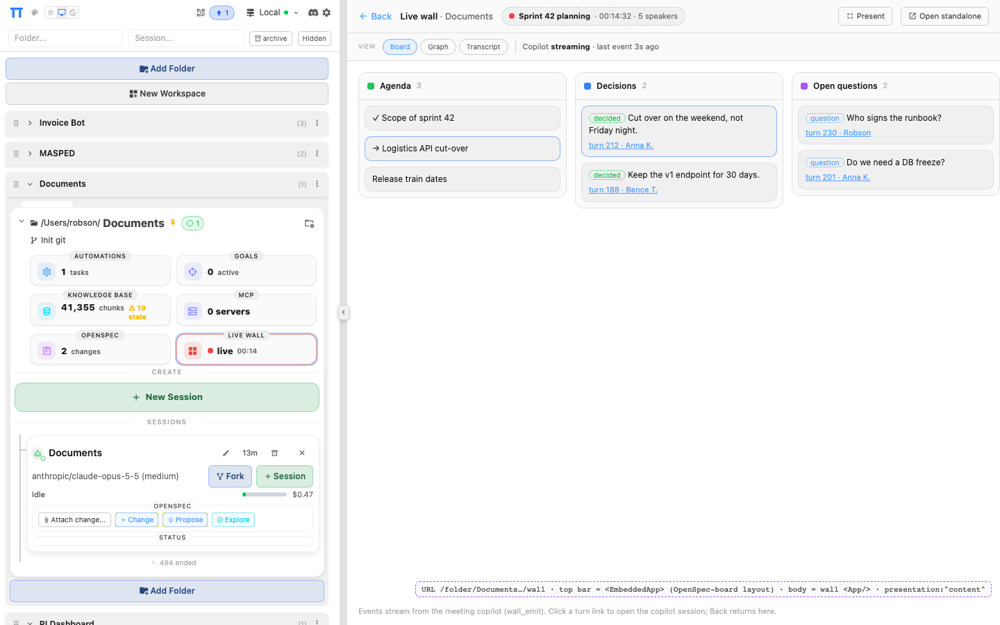
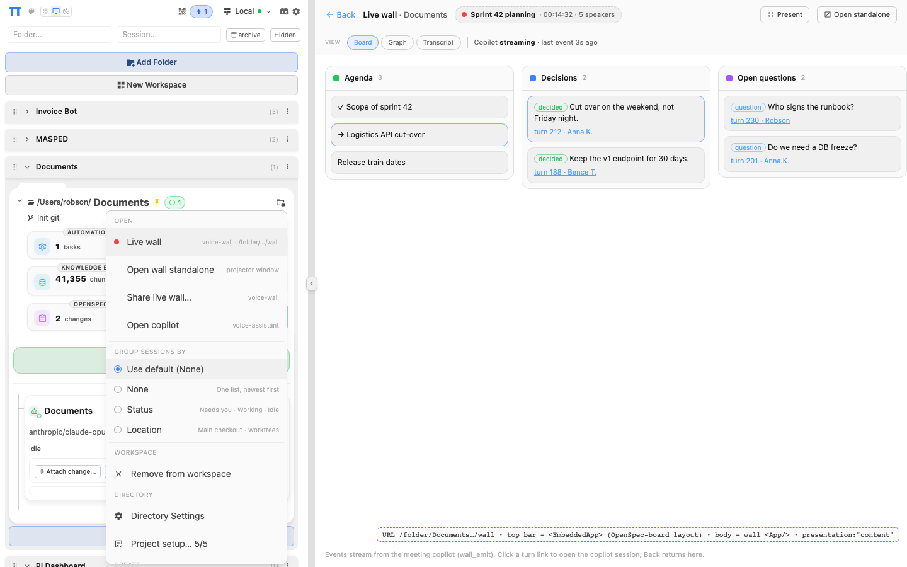
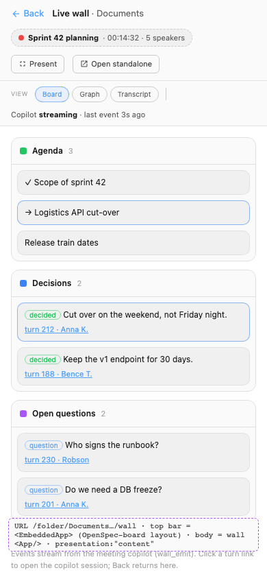
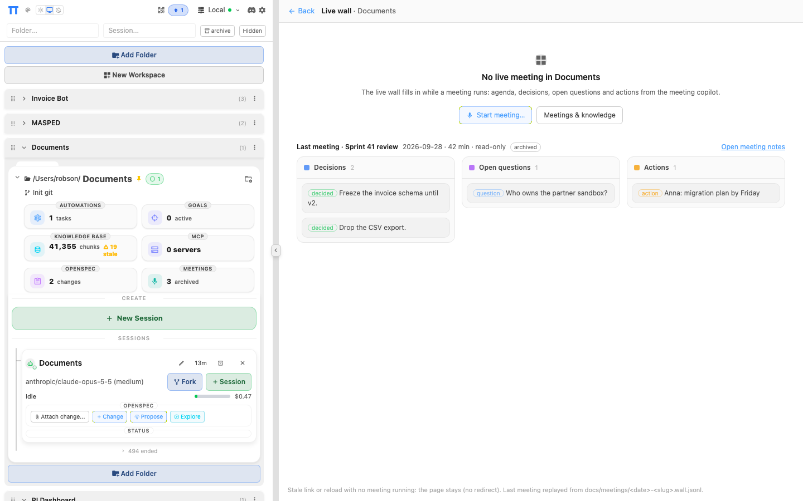
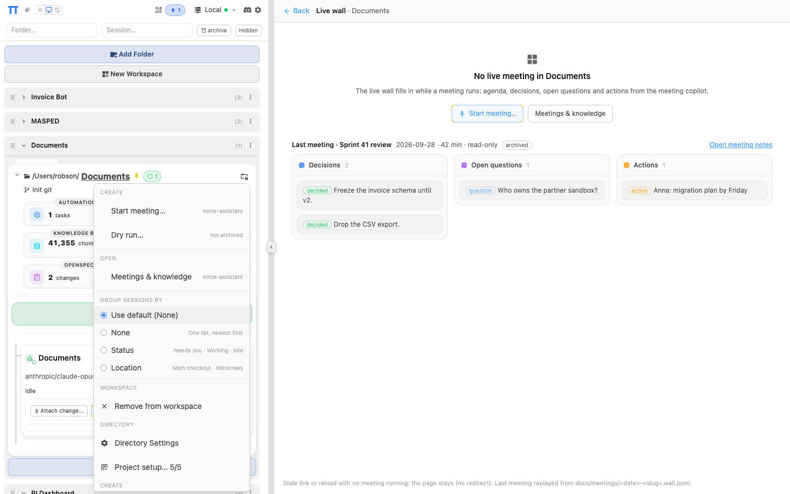

Live wall on the real dashboard
These are screenshots of the running dashboard (localhost:8000, folder /Users/robson/Documents, OpenSpec board route). capture.cjs rewrites the live DOM using the dashboard's own markup and classes to show the wall as a folder page with presentation: "content". Regenerate: NODE_PATH=$PWD/node_modules node openspec/changes/add-plugin-app-host/mockups/dashboard/capture.cjs [cwd]. Generic mockup: embedded-app.html.

/folder/<Documents>/wall. Sidebar and its header unchanged (π, theme, tunnel, server, Discord, settings). The wall plugin's sidebar-folder-section tile LIVE WALL · ● live 00:14 sits in the folder's tile grid beside OpenSpec/KB/Goals and is marked current. Content area: the OpenSpec board's top-bar layout (Back · title · crumb) rendered by <EmbeddedApp>; the dashed chip is the wall's HeaderContext; Present / Open standalone come from setActions. Below: the wall App (its own tabs and areas); turn links call host.openSession(copilotId).
useFolderMenuItem, above the existing groups: Live wall, Open wall standalone (projector window), Share live wall… (wall plugin) and Open copilot (voice-assistant). Shown only while a meeting runs in this folder.
No meeting running
Decided: no wall tile and no wall menu items while idle; a stale link or reload of /folder/<cwd>/wall keeps the page and shows an empty state instead of redirecting.

/folder/<cwd>/wall empty state. Sidebar: only the voice-assistant MEETINGS · 3 archived tile. Page: No live meeting, Start meeting… (voice-assistant start dialog), Meetings & knowledge, then the last meeting's wall, read-only, replayed from docs/meetings/<date>-<slug>.wall.jsonl (archive step 6a), with a link to the meeting notes. No Present / Open standalone actions while idle.